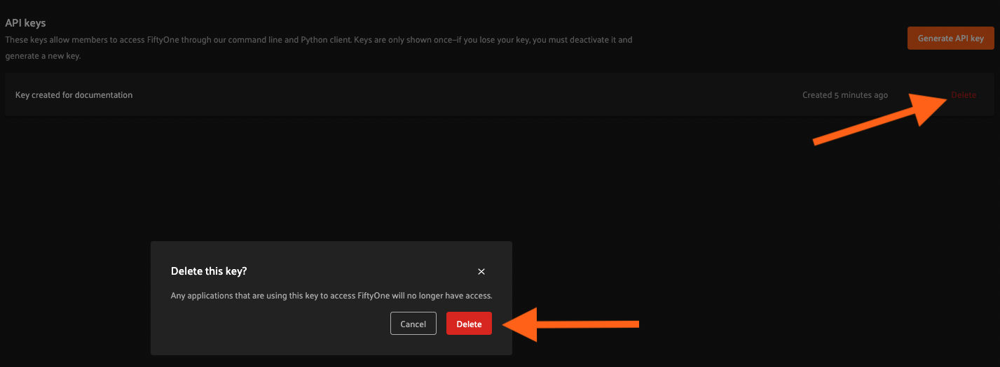

API Connection ¶¶
This page describes how to create API keys and configure your SDK installation to connect to your Teams deployment’s API.
All actions taken via API connections are authenticated based on the user associated with the API key, which means that concepts like user roles and dataset permissions are enforced.
Note
API connections are currently in beta. The recommended stable solution is to use your Teams deployment’s MongoDB connection.
Configuring an API connection ¶¶
You can configure an API connection by adding an API URI and API key to your FiftyOne config as described below:
| Config field | Environment variable | Description |
|---|---|---|
api_uri |
FIFTYONE_API_URI |
The URI of your FiftyOne Teams API. Ask your deployment admin for this value. |
api_key |
FIFTYONE_API_KEY |
Your FiftyOne Teams API key. See here to generate one. |
For example, you can set environment variables:
export FIFTYONE_API_URI==XXXXXXXX
export FIFTYONE_API_KEY==YYYYYYYY
See this page for more information about using your FiftyOne config.
Generating an API key ¶¶
Users can generate and manage API keys via the UI or the Management SDK.
Note
Guests cannot create or use API keys.
Generating keys via the UI ¶¶
You can access API key management features by clicking on your account icon in the upper-right of the FiftyOne Teams App and navigating to the “Settings > API keys” page.
A new key can be generated by clicking on “Generate API key” and optionally providing a nickname for the key to identify what it is used for. Click “Generate key” to complete the process.

Finally, copy the key and configure it locally using one of the options described here.

Warning
Keys are only shown once. Copy the key immediately, as it will not be accessible again. API keys provide full programmatic access to perform actions as a user, so secure them as you would a password!
Generating keys programmatically ¶¶
You can also use
generate_api_key() to
generate API keys programmatically.
Note
Admins can generate API keys for other users, if desired.
Deleting an API key ¶¶
To delete a key and remove its access, find the key to delete in the list and click “Delete”.

You can also programmatically delete API keys via
delete_api_key().
Note
Admins can delete API keys for other users, if desired.